Progression Route · Regional Guide · Final Cleanup
Mina the Hollower Walkthrough
Follow the main journey from the opening shipwreck through Ossex, the Spark Generator regions, late-game areas, final encounters, and post-story completion cleanup.
This is a progression hub: it tells you where to go, what each stage is trying to accomplish, and which detailed guides to open next.
Quick Answer: What Is the Recommended Progression Order?
Begin with the shipwreck and early Ossex route, complete the first major progression through Southern Outskirts and Queensbury Crypt, then use Ossex as your central hub while the middle portion of the game opens.
Several later regions can be approached with more flexibility. Your exact route may change depending on equipment, side quests, unlocked travel points, optional bosses, and the order in which you complete the Spark Generators.
This walkthrough therefore separates the fixed early route from the more flexible middle game, then reconnects the path for the final areas and completion cleanup.
Recommended Progression Route
Prologue
Loner's Landing
The opening sequence introduces movement, Hollowing, basic combat, Bones, recovery, Sidearms, and the first route toward Tenebrous Isle.
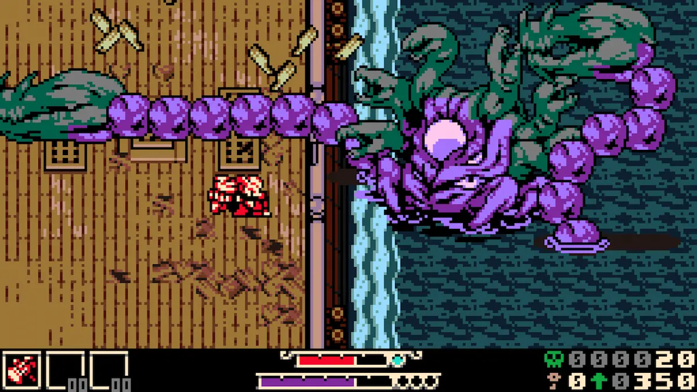
Main Objective
Escape the shipwreck route, learn Mina's basic movement, understand Hollowing, and begin the journey toward the island hub.
Major Encounters
Treat the opening enemies and larger encounters as tutorials for spacing, recovery, and safe attack timing.
Do Not Miss
- Basic Hollowing practice
- Early weapon and Sidearm experimentation
- Bone recovery and healing habits
- Optional exploration before leaving
Before Leaving
Make sure your controls feel comfortable. An awkward control layout will make every later boss harder than necessary.
Central Hub
Ossex
Ossex is more than a place you pass through once. Shops, NPC dialogue, side quests, purchases, and new rewards can change after major progress, so returning regularly is part of the route.
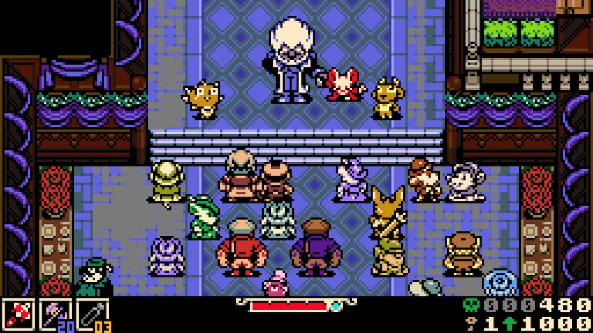
Main Objective
Learn the hub layout, speak with major NPCs, inspect available shops, and identify the route leading toward the first major regions.
Important Habit
Return after major bosses and regional milestones. New dialogue, shop inventory, quests, or rewards may appear.
Do Not Miss
- Vendor and NPC locations
- Available Bone purchases
- Quest-giver dialogue
- New routes opening after major progress
Preparation
Bank resources when possible and avoid carrying more unprotected Bones than you are comfortable losing during exploration.
Early Exploration
Southern Outskirts
Southern Outskirts expands the early exploration loop and begins testing whether you can recognize hidden routes, optional rooms, NPC events, and environmental shortcuts.
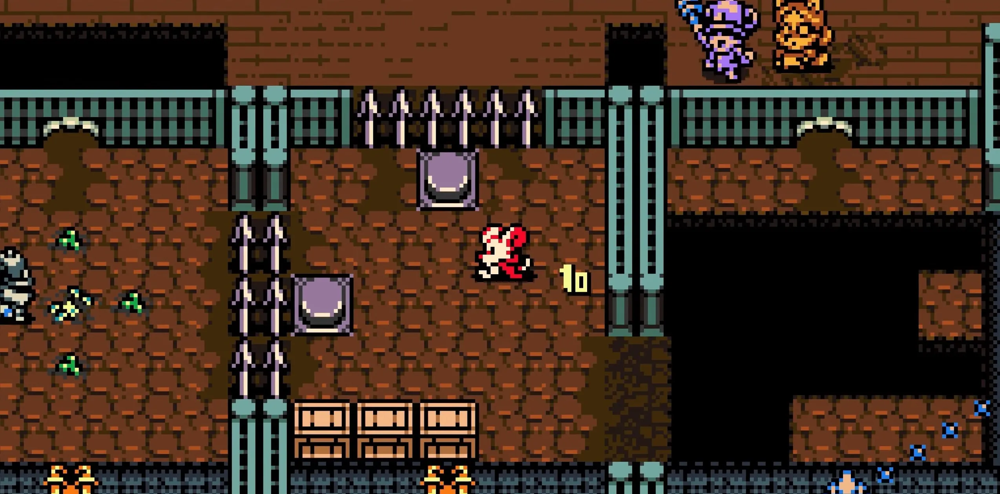
Main Objective
Continue toward the first major progression region while learning how optional routes branch away from the obvious path.
Exploration Focus
Check suspicious walls, platforms, lower paths, and side rooms after clearing nearby enemies.
Do Not Miss
- Early optional encounters
- NPC conversations
- Breakable or hidden paths
- Shortcuts back toward the hub
Build Advice
Use a safe weapon and avoid spending every Sidearm charge on ordinary enemies before a difficult room or boss.
First Major Region
Queensbury Crypt
Queensbury Crypt is an early major progression region and one of the first places where exploration, boss preparation, NPC rewards, and hidden content begin to overlap.
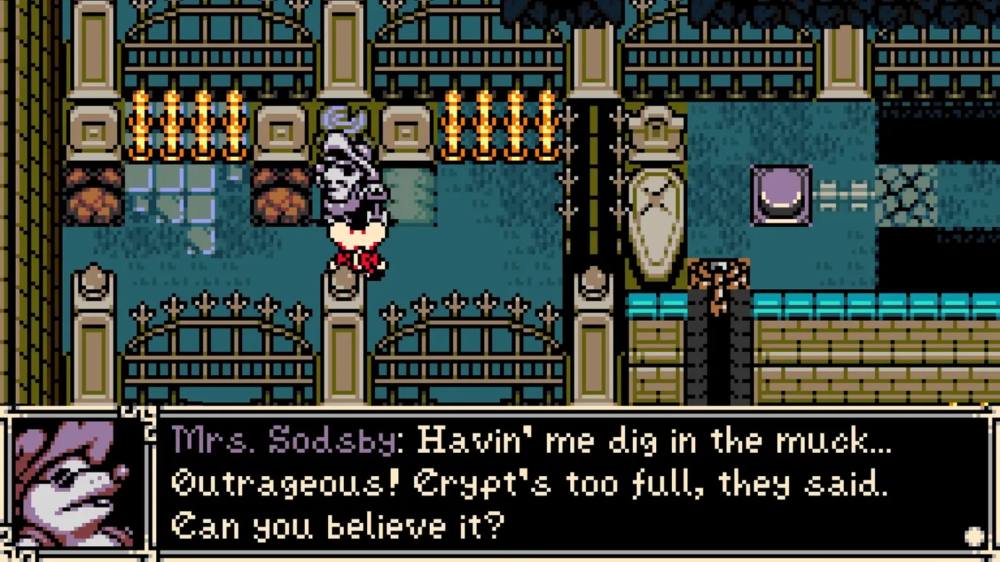
Main Objective
Explore the region, unlock useful routes, progress its major quest, and defeat the boss guarding the region's main progression.
Major Boss
The Duchess of Queensbury acts as an early test of spacing, patience, recovery, and reading attack patterns.
Do Not Miss
- NPC and quest-related rewards
- Optional chambers and side routes
- Trinkets outside the direct boss path
- Return paths and travel shortcuts
Before the Boss
Bank spare Bones, refill important resources, and use a loadout that lets you survive long enough to learn.
How the Middle Game Opens Up
After the first major region, the route becomes less linear. Several large areas, side routes, bosses, and Spark Generator objectives become available, and not every player will complete them in exactly the same order.
A practical approach is to return to Ossex after each major regional clear, check new dialogue and shop changes, then select the next region based on your current equipment and comfort level.
Swamp Route
Backwaters & Nox's Bayou
The Bayou route increases environmental pressure and makes movement, route awareness, optional quests, and resource discipline more important.
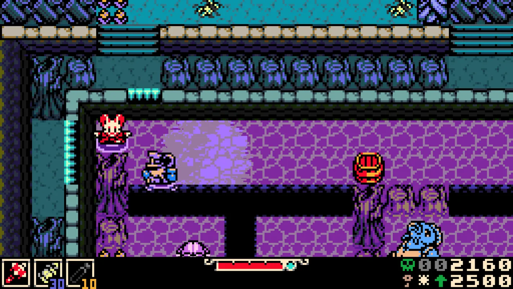
Main Objective
Navigate the swamp route, open shortcuts, follow regional progression, and prepare for its major boss and Generator objective.
Major Boss
Nox's Beast is a notable difficulty step because movement and arena control matter alongside direct damage.
Do Not Miss
- Returnable NPC quest steps
- Optional Bayou routes
- Hidden or elevated pickups
- Connections back to earlier areas
Survival Advice
Slow down around hazards. Losing health before reaching a difficult encounter creates unnecessary resource pressure.
Forest Route
Kindlewood
Kindlewood contains important exploration routes, hidden pickups, shops, optional interactions, and progression leading toward later regions.
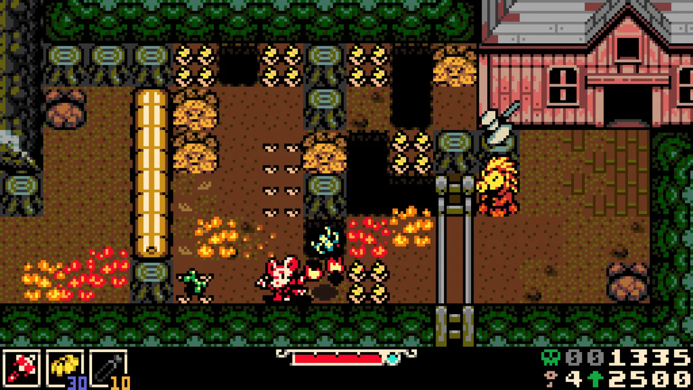
Main Objective
Progress through the region, learn its internal routes, and unlock the path leading toward later major encounters.
Key Progression
Major encounters in and around Kindlewood test whether your build can handle pressure without wasting resources.
Do Not Miss
- Hidden chests away from the direct route
- Shop and vendor interactions
- Routes that require returning later
- Utility Trinkets that change exploration
Cleanup Note
Record any route you cannot yet access. Kindlewood is worth revisiting with improved mobility.
Industrial Route
Septemburg
Septemburg contains a dense mix of main progression, side content, memorable enemies, optional encounters, and one of the game's more distinctive boss routes.
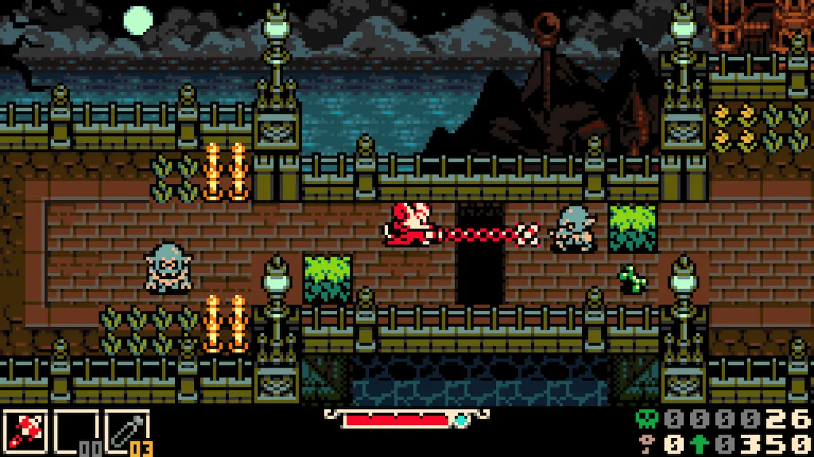
Main Objective
Explore the town and surrounding routes, follow the main objective, and complete the regional Generator progression.
Major Boss
The Carving Man route combines pursuit pressure with a final encounter that rewards calm positioning and pattern recognition.
Do Not Miss
- Optional encounters and secret bosses
- Town NPCs and sidequest steps
- Shortcuts between connected zones
- Rewards tied to returning later
Boss Preparation
Avoid panic movement during chase sequences. Save healing and Sidearm resources for the actual damage windows.
Desert Route
Sandfalls
Sandfalls contains major traversal challenges, optional activities, hidden routes, and several useful progression rewards.
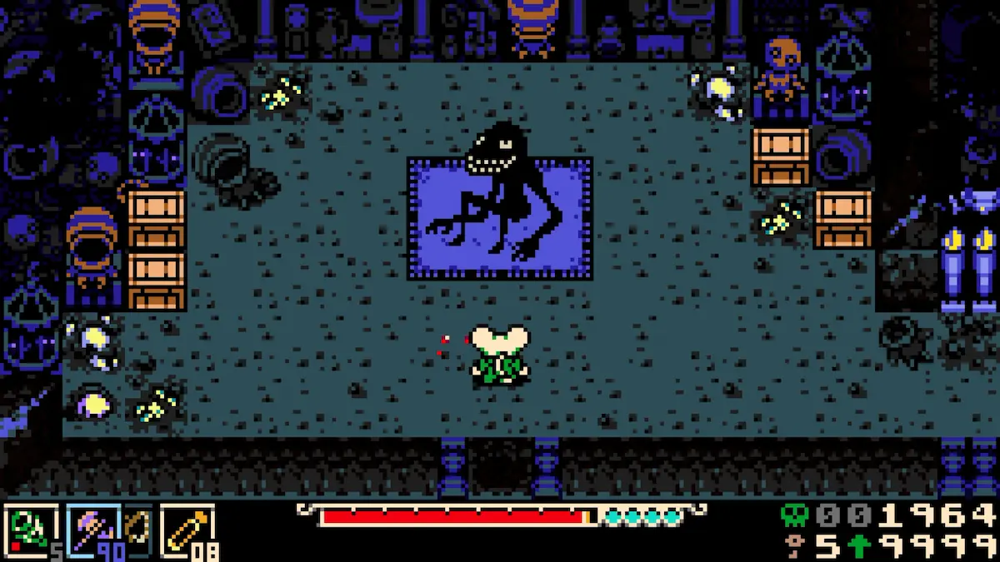
Main Objective
Open regional paths, complete required progression, and inspect optional rooms that branch away from the direct route.
Optional Challenge
The Ring Dive activity is tied to Tunneling Codex and rewards players who master repeated burrow movement.
Do Not Miss
- Ring Dive Parlor
- Movement and race-related rewards
- Hidden desert routes
- Regional shops and NPC interactions
Movement Advice
Focus on controlled inputs rather than speed. Many Sandfalls challenges punish rushed movement.
Wilderness Route
Western Wilds
Western Wilds mixes exploration, environmental danger, optional quest rewards, hidden facilities, and several Trinkets that completion-focused players should double-check.
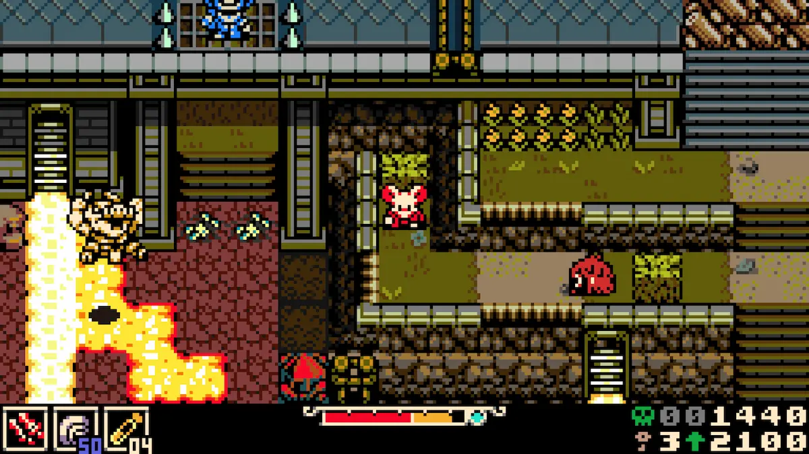
Main Objective
Explore the region, unlock connected routes, and complete any required objectives leading toward later progression.
Important Areas
Pay attention to optional facilities, fire-related areas, and side paths that do not sit directly on the main route.
Do Not Miss
- Dead Leaf reward check
- Molten Foundry routes
- Optional NPC reward conditions
- Trinkets tied to exploration or hazards
Cleanup Advice
Compare your inventory against the full Trinket list before assuming a missing item is permanently lost.
Coastal Route
Bone Beach
Bone Beach combines coastal exploration, difficult regional encounters, hidden routes, optional pickups, and major boss progression.
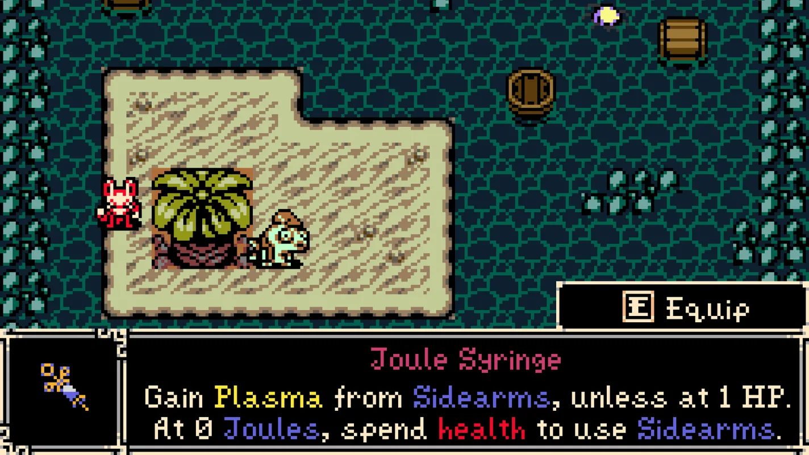
Main Objective
Open coastal routes, complete the region's major progression, and prepare for increasingly demanding boss encounters.
Major Encounters
Bone Beach contains serious mid-to-late-game combat checks and rewards careful resource management.
Do Not Miss
- Hidden coastal caves
- Elevated or underwater-looking routes
- Optional Trinket chests
- NPC rescue or return conditions
Build Advice
Bring a build you can control consistently. A theoretically high-damage setup is not useful if it causes repeated mistakes in dangerous terrain.
Mountain Route
Coltrane Peak
Coltrane Peak is a demanding late-region route where movement, environmental awareness, build quality, and boss execution all matter.
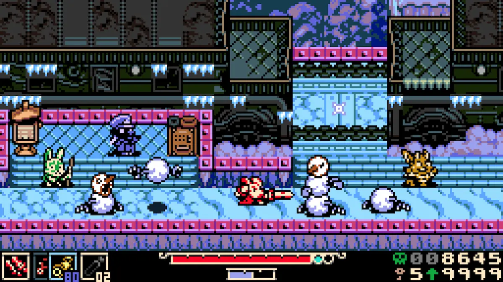
Main Objective
Complete the regional route, unlock its major progression, and survive the bosses guarding late-game advancement.
Difficulty
Several fights associated with this stage rank among the tougher first-playthrough encounters.
Do Not Miss
- NPC rewards in remote routes
- Hazard-protection Trinkets
- Hidden paths around major structures
- Return routes after boss progression
Preparation
Upgrade your preferred weapon, refill resources, and prioritize a loadout you understand rather than changing everything immediately before a hard boss.
Endgame Route
Radiant Manor
Radiant Manor begins the endgame pressure sequence. Expect major story developments, demanding encounters, fewer comfortable mistakes, and important decisions about preparation.
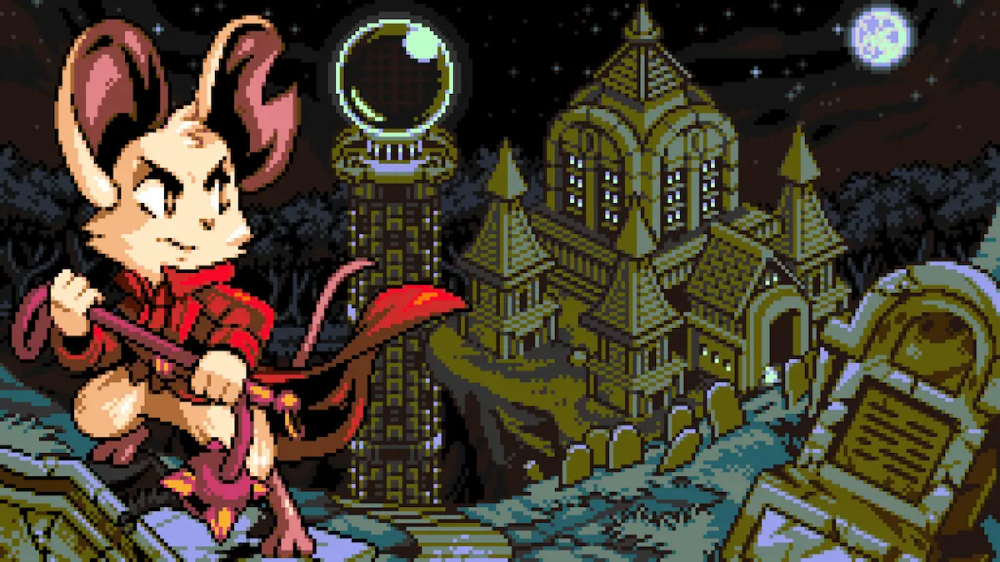
Main Objective
Advance through the Manor, complete its story sequence, and prepare for multiple serious late-game encounters.
Boss Pressure
Endgame encounters test consistency across several attempts rather than relying on one simple gimmick.
Before Entering
- Spend or protect spare Bones
- Upgrade your preferred weapon
- Prepare a reliable boss loadout
- Finish urgent NPC or shop tasks
Spoiler-Safe Advice
Do not assume the first apparent conclusion is the end of every possible route, optional condition, or hidden outcome.
Final Major Region
Astral Orrery
Astral Orrery combines complex traversal, late-game mechanics, major encounters, high-value collectibles, and some of the strongest required progression checks.
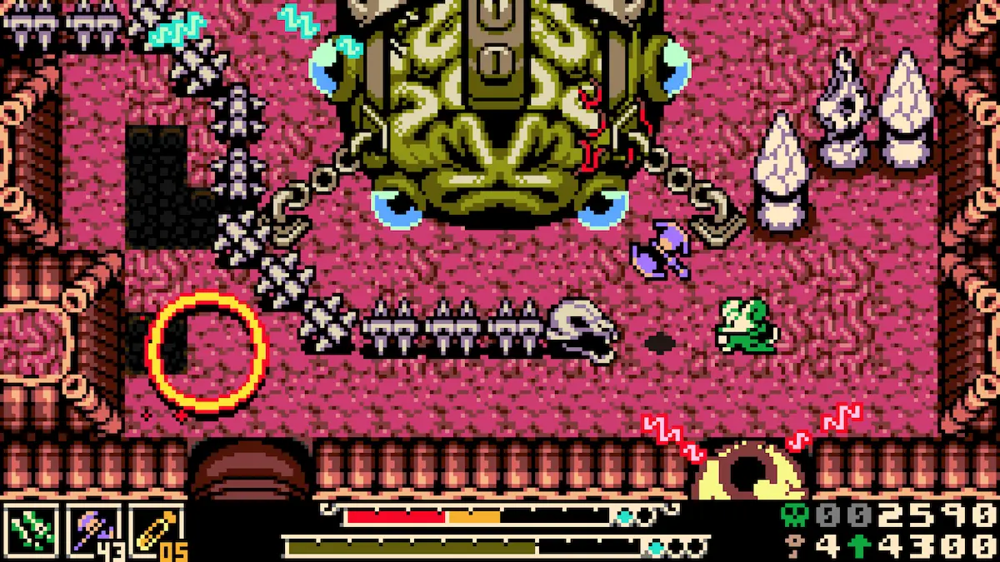
Main Objective
Navigate the Orrery, understand its regional mechanics, defeat the required encounters, and complete the main progression.
Major Difficulty
The Congealed and other late encounters can act as major first-playthrough execution checks.
Do Not Miss
- Portal and puzzle side rooms
- Optional chests and Trinkets
- NPC rewards and special items
- Routes that loop back after progression
Combat Advice
Treat each boss attempt as information gathering. Changing your entire build after every death can make improvement harder to measure.
Final Cleanup and 100% Completion
Finishing the main route does not automatically mean that every Trinket, optional boss, Sidearm, weapon, NPC quest, secret, collectible, or achievement has been completed.
The most efficient cleanup method is to compare your current progress against structured lists, then revisit areas with a specific target. Random backtracking is slower and makes it easy to check the same room repeatedly.
Mina the Hollower Walkthrough FAQ
Is Mina the Hollower completely linear?
No. The early route is more structured, but the middle portion allows more flexibility in regional order, side content, and optional encounters.
Where should I go after Queensbury Crypt?
Return to Ossex first. Check NPC dialogue, shops, quests, and newly available routes, then select one of the open regional objectives based on your current equipment and comfort level.
Should I collect every Trinket during the first visit?
Not necessarily. Some routes become easier after gaining new movement, knowledge, or regional access. Record blocked paths and return during cleanup.
Should I use the same build for every region?
No. Exploration, boss learning, resource farming, and high-damage attempts benefit from different loadouts. Change one part at a time so you understand what actually improved the run.
Can I return for missed items?
Most missed content should be checked through its original region, NPC, shop, quest condition, or documented recovery route before assuming a new playthrough is required.
Is this a full 100% walkthrough?
This page is a complete progression hub, not a room-by-room collectible map. Use it together with the 100% Cleanup Guide, interactive checklist, Trinket database, and Hidden Secrets archive.
Related Guides
Update Log
- July 16, 2026: Published the first complete progression-hub version.
- July 16, 2026: Added the early route, flexible middle-game regions, late-game progression, cleanup tools, and regional image slots.
- Future updates: Add verified regional screenshots, more precise route notes, boss-page links, and item-specific walkthroughs.